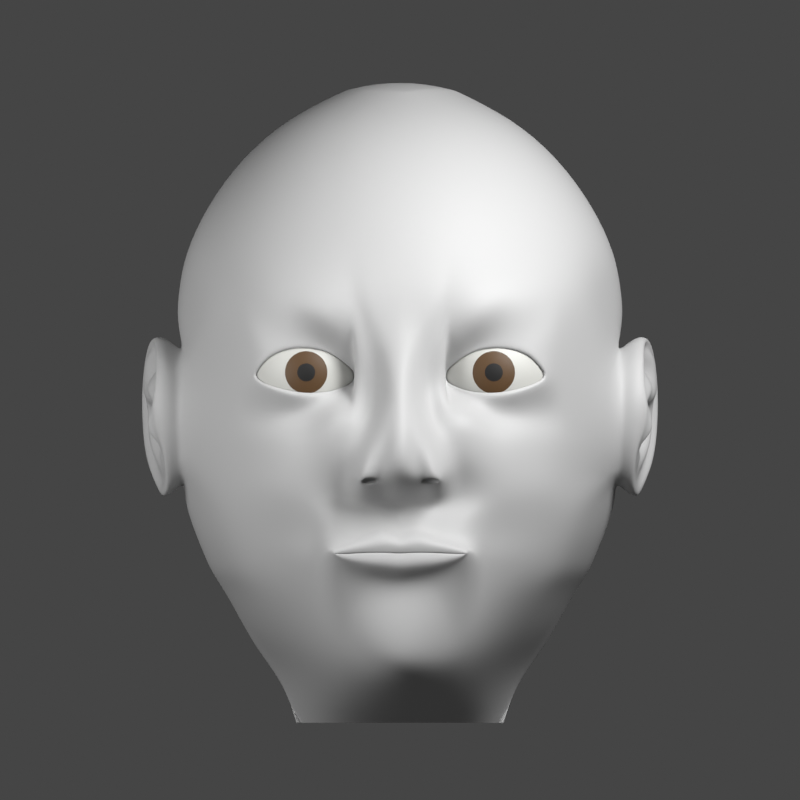
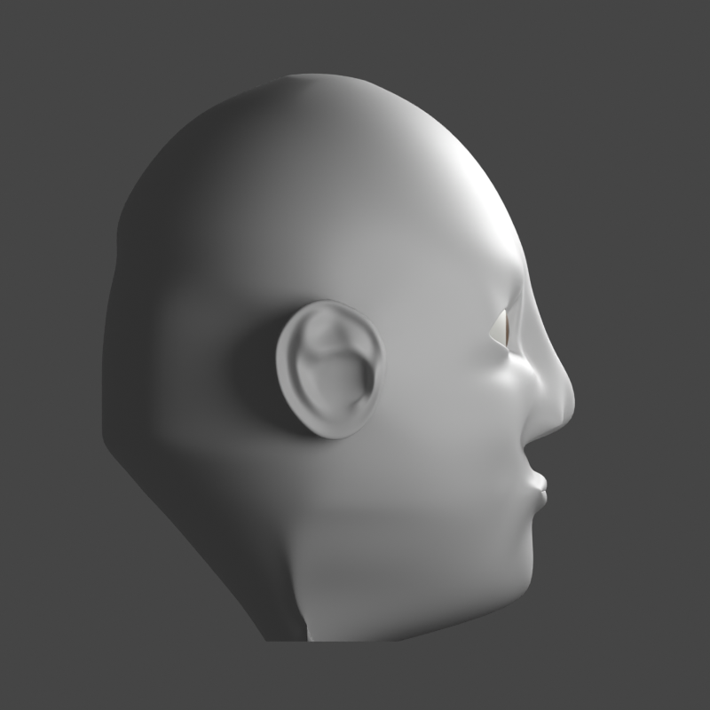
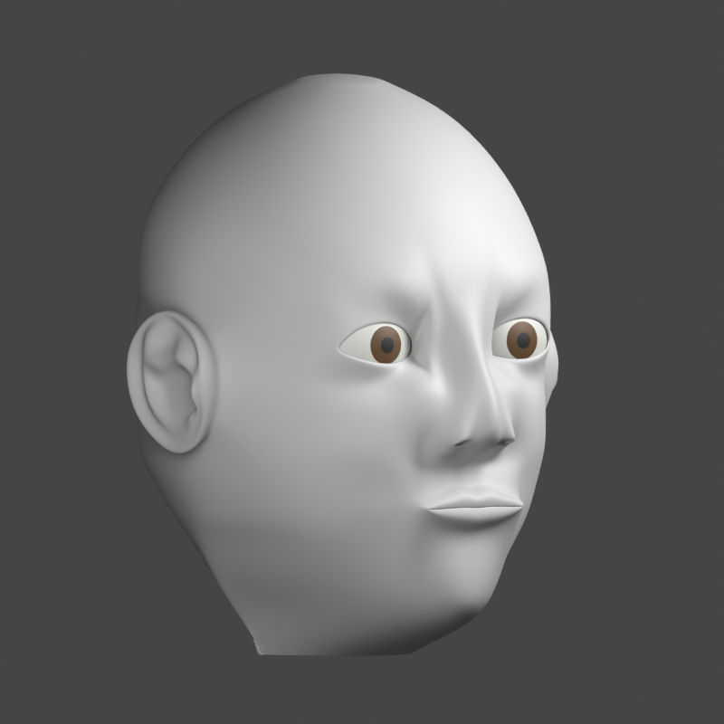
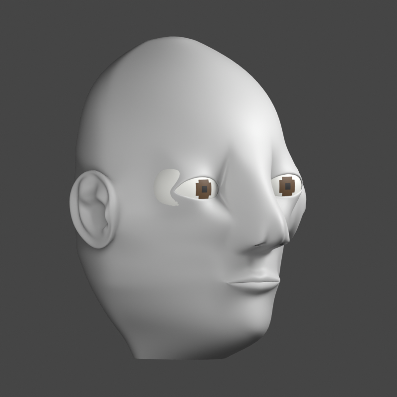
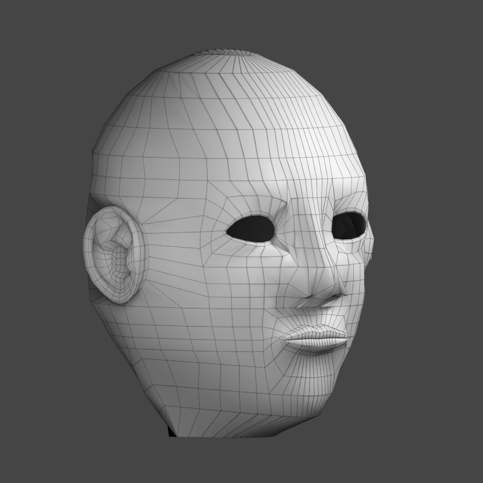
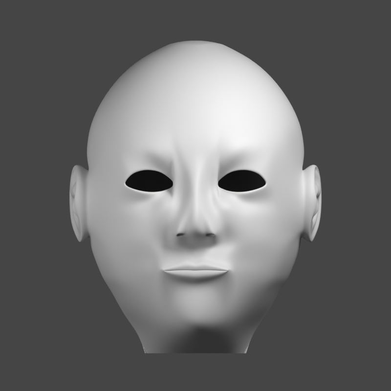
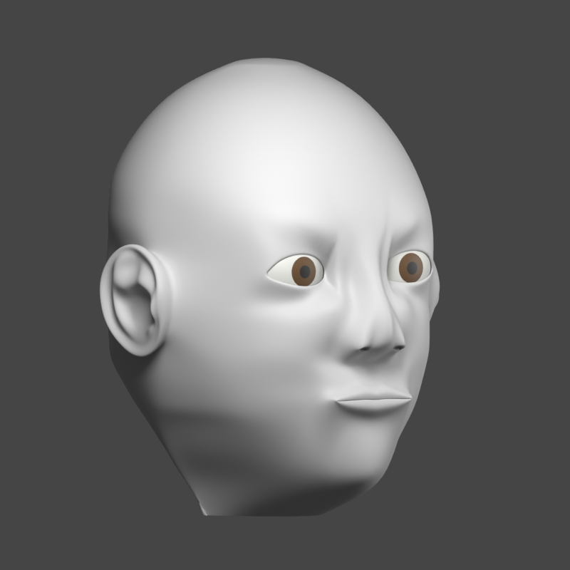
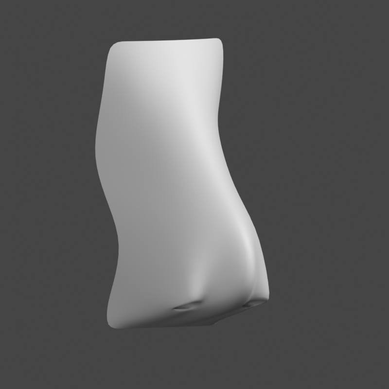
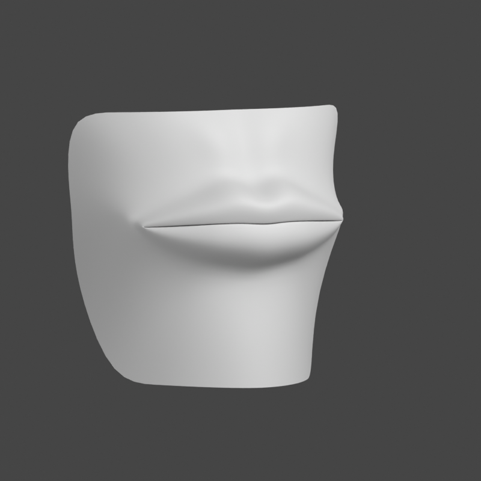
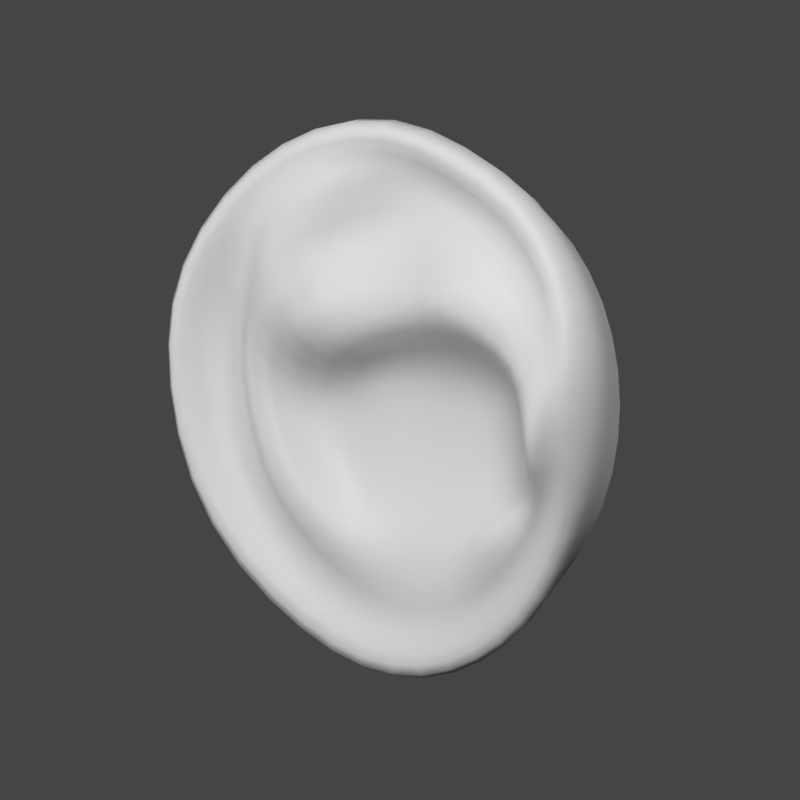

Executed and combined. Artistic status: REVISE. Human forms approval: pending.
These are actual Blender captures. Nose, lips, ears and the new head are connected in one editable skin mesh. Pinching around the inner brow and nose, the nasal-base transition, ear folds and skull/jaw shape still need work.










Full review · Editable Blender checkpoint · Verification record